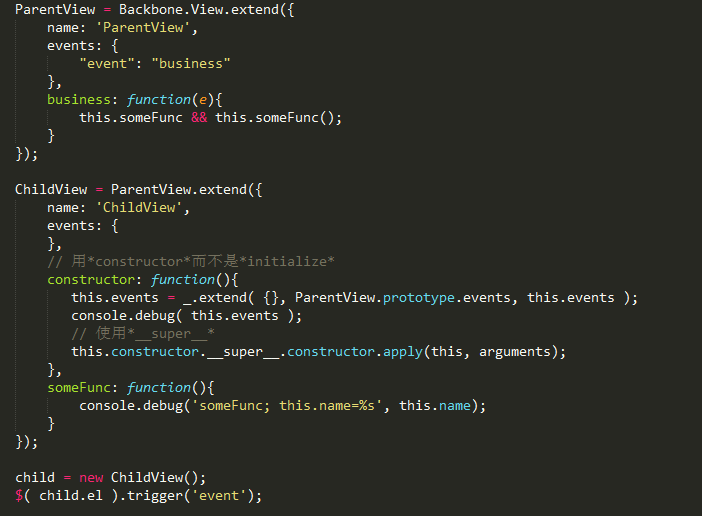
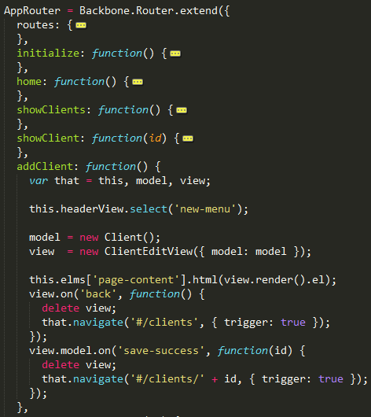
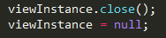

rebuild our sites by MVC
——Backbone.js的源码探索之路
陈恺睿 / kerry95
个人介绍
陈恺睿 / kerry95
- 梦飞无线工作室 FE
- 电子科技大学在校大三
- 关注Web，专注FE
- 喜欢篮球，也喜欢动漫
Backbone Overview

先了解Backbone.js的backbone
- 继承机制
- 事件通信
- 源码分析，探索文档中了解不到的东西
继承的实现

使用发现的*__super__*实践
事件通信的内部实现

要在一个对象上订阅事件，需要先持有这个对象的引用


然后探讨一个问题：
一个视图的生命周期里发生了什么。。。
作为新视图诞生时需要做什么？
- 实例化
- 添加事件
- 渲染模板
- 插入DOM中
- 一窥View构造函数里发生了什么

-
实例化的时候
才添加model的引用 -
先将元素插入DOM中
再渲染模板的好处- 可以在render时
使用所处DOM结构的信息
（比如坐标位置）
- 可以在render时
切换别的视图时对旧视图怎么做？
- 去除还是隐藏以重用？
- 维护隐藏的视图使代码的复杂度剧增，难以维护，所以去除它
The key to building large applicatin is not to build large application in the first place.
去除什么？
- 只是DOM元素？
- 这是基于MVC的Web app相对于传统site不同的一个地方
- 需要从垃圾回收说起
- 如果在销毁view实例时不解除collection上的这个change事件，那么由于collectionA实例内部属性_callbacks里有doSth函数的引用，而doSth函数的作用域链上有collectionA的引用，形成循环引用。
- 陷阱：其实之前有提到过model实例应该在router模块中View实例化的时候传进去的
- 通过AMD封闭的生态圈隔离collection模块和view模块，进而隔离闭包的作用域链上隐含的循环引用
自己动手，丰衣足食
- 从DOM中去除元素及DOM事件
- 去除view实例所监听的model/collection事件
Backbone官方文档：

社区里的优秀方案：

但其实.....源码是很好的学习途径：

自己动手，丰衣足食
- 从DOM中去除元素及DOM事件
- 去除view实例所监听的model/collection事件
只需要...

自己动手，丰衣足食
- 从DOM中去除元素及DOM事件
- 去除view实例所监听的model/collection事件
- 去除view实例所提供的事件
只需要...

为什么？

_callbacks中有回调函数和context的引用
自己动手，丰衣足食
- 从DOM中去除元素及DOM事件
- 去除view实例所监听的model/collection事件
- 去除view实例所提供的事件
- 去除router模块中view实例的引用

有序的routes

好奇：怎么保证这些路由的匹配顺序的？这可是对象呀

深入this._bindRoutes()

深入_.keys(this.routes)

这不科学，居然用for...in！标准里面for...in是不能保证顺序的（虽然JS引擎的实现上按定义属性的顺序遍历的）。要保证顺序的JS数据结构应该用数组，个人觉得Backbone这里做得不好
小结：
- 源码分析是理解优秀框架的好帮手
-
基于MVC的web app相对于传统的site要更注意内存泄漏
- 使用自定义事件通信
- 视图切换频繁
})();
// 自调用结束